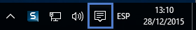
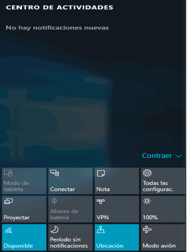
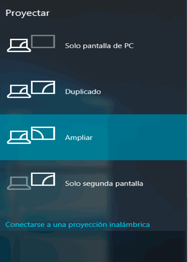
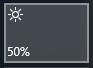
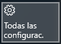

El Centro de actividades es la nueva área de Windows 10 donde podemos realizar fundamentalmente dos cosas: obtener notificaciones del sistema de muy diverso tipo y, dos, hacer los cambios de configuración del sistema más comunes y recurrentes, como conectarse (o desconectarse) a la red, cambiar el brillo de la pantalla o, simplemente, tomar una nota.
El Centro de actividades se despliega con el icono del área de notificaciones de la barra de tareas.

Se abre un panel en el lado derecho del escritorio de Windows. En la parte superior tenemos una sección con las notificaciones del sistema y en la parte inferior un conjunto de botones con las tareas de configuración que ya mencionamos, aunque éstas pueden variar de equipo a equipo.

Las notificaciones pueden ser de muy diverso tipo, desde la detección de alguna amenaza por Windows Defender (el antivirus básico incorporado en Windows), los avisos de actualizaciones de Windows Update o la lista de dispositivos conectados al ordenador.
A su vez, algunos de los botones de la parte inferior abren ventanas nuevas según la tarea a realizar. Por ejemplo El botón Todas las configuraciones abre la ventana de Configuración. En contraste, botones como Proyectar o Disponible abren sus respectivas opciones en el mismo panel del Centro de actividades.

En otros casos, la tarea se realiza con el mismo botón, sin abrir ventanas o proporcionar información en el panel, como Brillo, que cambia el brillo de la pantalla reduciéndolo o aumentando con pulsaciones sucesivas.

En esta misma área vas a encontrar el botón Todas las configuraciones. En otros equipos recibe un nombre ligeramente diferente, aunque usa el mismo icono, un pequeño engrane.

Este botón abre la ventana de Configuración. Como recordarás, esta opción también la encontramos en el menú Inicio y, de hecho, de modo recurrente en otras opciones de Windows. Ello se debe a que las tareas de configuración son muy importantes en el manejo del sistema. Además, Windows 10 las ha simplificado de manera notable. Por ello, debemos dedicarle el siguiente apartado.